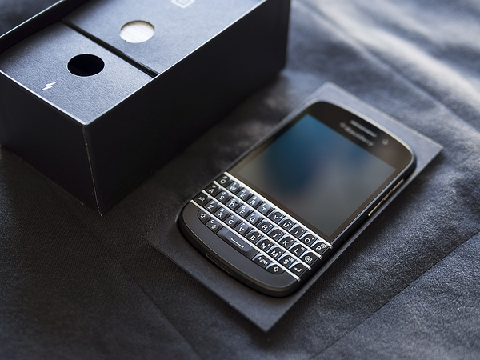
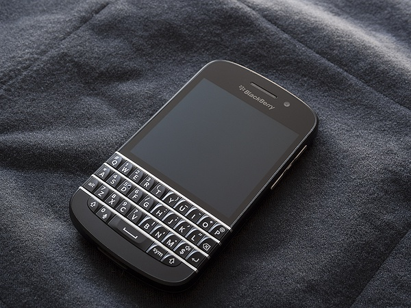
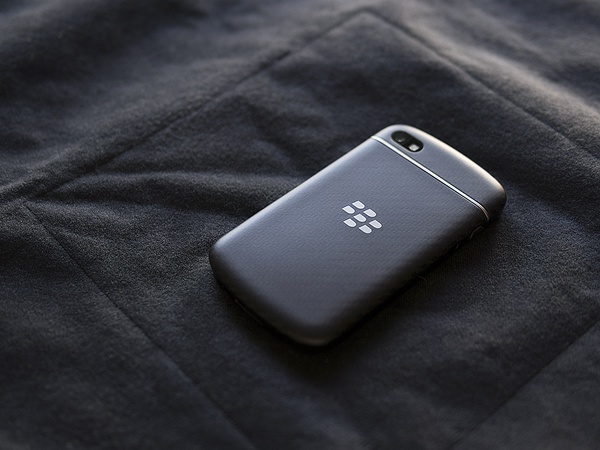
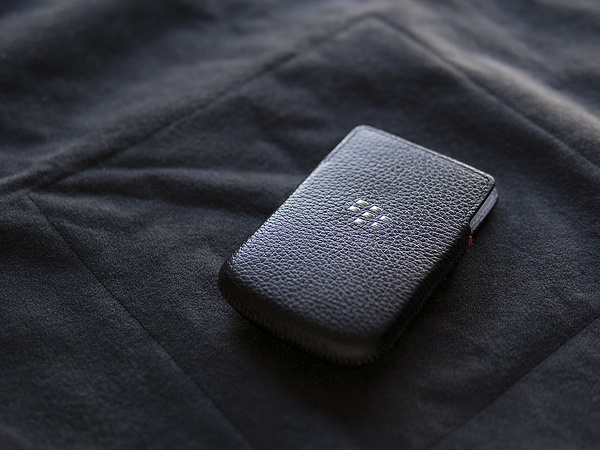

作为资深的伪BBer，我对黑莓的爱好仅仅体现在其外观的优美上，尤其是黑莓手机的全键盘真是让人流连忘返的美。而黑莓系统的安全和优雅一直没有深入体验过。
按耐不住内心的煎熬，做了很久的惨无人道的纠结之后终于入手了第一台黑莓手机 —— blackberry Q10。

Q10是黑莓在OS 10.1上开发的第一款全键盘手机，黑莓手机怎么可以没有全键盘呢？所以妥妥儿忽略掉了之前上市的Z10这样的无键盘黑莓而选择了Q10。从大体上看Q10在硬件上延续了纯正的黑莓血统，配上OS 10.1顺滑流畅的系统，个人觉得这是一款专为黑莓全键盘爱好者量身打造全键盘手机。
Q10采用3.1寸的屏幕，分辨率为 720 x 720，PPI达到了330。Super AMOLED材质的屏幕色彩艳丽，加上QWERTY实体键盘，着实让人爱不释手。2100mAh的可更换电池也超越了之前所有的黑莓机种，使用1天毫无压力。

Q10机体材质握感舒适，拿在手中很有分量感。

后置摄像头效果中规中矩，只能说够用。由于我是标准的外貌党，对黑莓系统的细节就不错探究了。再来看看皮套。原装的皮套做工相当棒，设计也非常合理，抽插不会有任何问题。

目前黑莓的悲剧就是应用数量了，常用的支付宝、微信也没有很好的解决方案。综合来看，作为一台纯工作备机，Q10能够非常完美的工作，但是作为主力机，还是有一定差距。